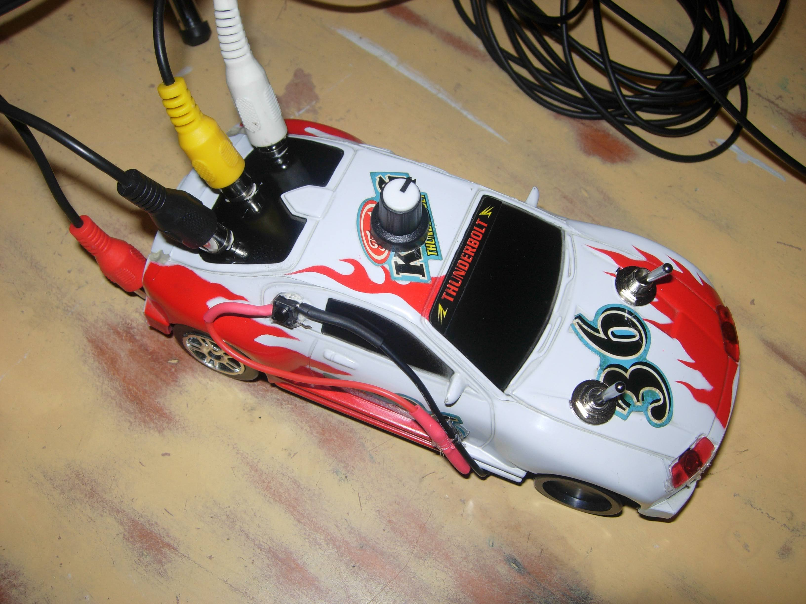
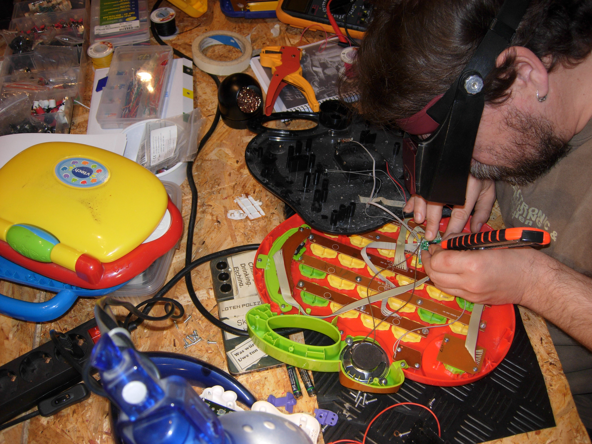
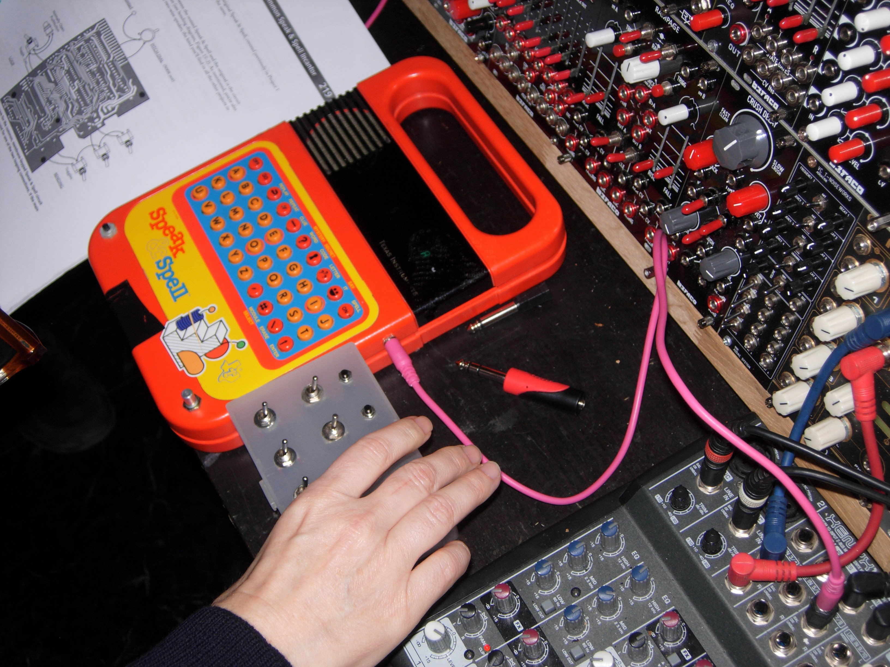
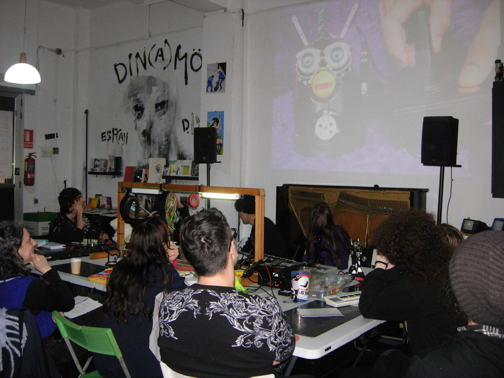
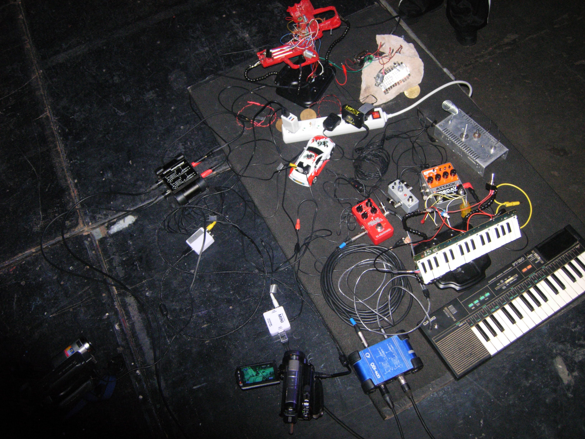
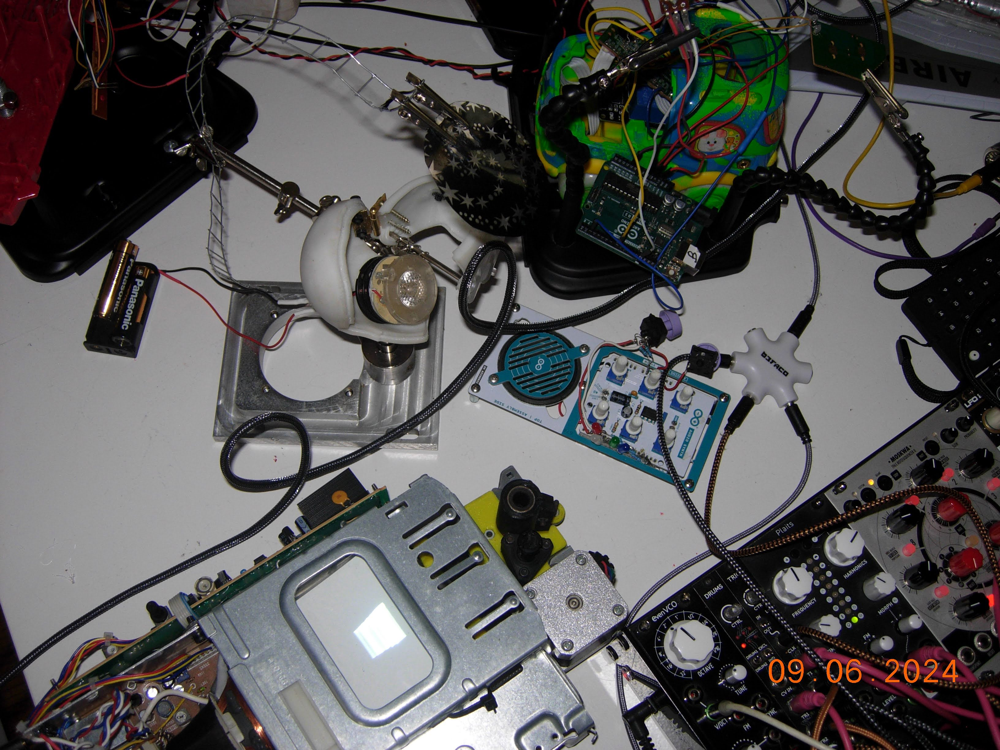

Dirty Video Mixer.
JALEO.
[2024 - Actualmente]
Prácticas de piratería y DIY: Investigación sobre el circuit bending.

Dirty Video Mixer.






Jaleo toma como referencia la filosofía y metodología del Circuit Bending.
El proceso de Circuit Bending es un delicado equilibrio entre la experimentación libre y la ingeniería inversa.
En palabras más claras, el Circuit Bending es una técnica que consiste en cortocircuitar dispositivos electrónicos de bajo voltaje –alimentados con baterías– con fines creativos.
Es un procedimiento de prueba y error que puede dar resultados inesperados, tanto desbloqueando nuevas características en el dispositivo como rompiéndolo por completo.
La traducción no es simple. Literalmente puede traducirse como “doblar un circuito”, en el sentido en que se dobla con fuerza un pedazo de hierro hasta curvarlo. Pero en un sentido más amplio, la expresión refiere a sacar el máximo provecho de un circuito electrónico, insertando, incluso, nuevos componentes como resistencias variables (potenciómetros), botones, interruptores y salidas de audio, buscando funcionalidades que no vienen determinadas de fábrica. Tal vez, una traducción de “circuit bending” más adecuada para nuestra lengua sea “estrujar un circuito”, lograr que salga hasta la última gota de las capacidades que nos ofrece.
Profesión: artista, hacker, luthier, juguetero y pirata.
El Circuit Bending suele concebirse como una filosofía, una actitud frente a los mandatos comerciales y sociales que caen sobre los objetos tecnológicos: la idea instalada es que los objetos tienen sólo una vida; cuando se rompen o dejan de funcionar hay que comprar otro.
El Circuit Bending es un acto de desobediencia. Para la autonomía, la autodefensa digital y la educación en métodos ofensivos.
“Si esto puede ocurrir por accidente, ¿qué se puede lograr a propósito?” – Reed Ghazala
Jaleo ha sido presentado en:
Realización de talleres sobre Circuit Bending: